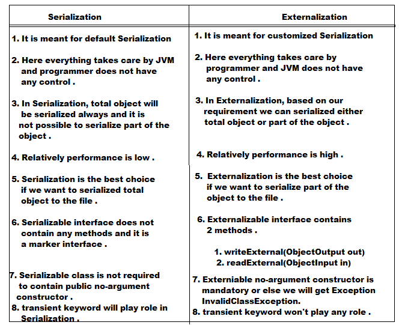

Externalization
- In Serilaization, everything takes care by JVM and programmer doesn't have any control .
- In Serialization, total object will be Serialized always and it is not possible to serialize part of the object, which may creates performance problems in some cases .
- To overcome these problems we should go for Externalization, where everything takes care by programmer and JVM doesn't have any control .
- The advantage of Externalization is based on our requirement , we can save either total object or part of the object , so that relatively performance will improved .
- To provide Externalizable ability for any Java object compulsory the corresponding class should implement Externalizable interface .
- Externalizable interface is the child interface of Serializable and it contains 2 methods are writeExternal() and readExternal()
- public void writeExternal(ObjectOutput out) throws IOException
- This method will be executed automatically at the time of Serialization .
- Within this method we have to write code to save required variables to the file .
- public void readExternal(ObjectInput out) throws IOException
- This method will be executed automatically at the time of Deserialization .
- Within this method we have to write code to read required variables from the file and assign to the current object .
- At the time of Deserialization JVM will create a separate new object by executing public non-argument constructor, or that object readExternal() method will be executed .
- Externalizable class should compulsory contains public no-argument constructor otherwise we will get RuntimeException saying InvalidClassException .
